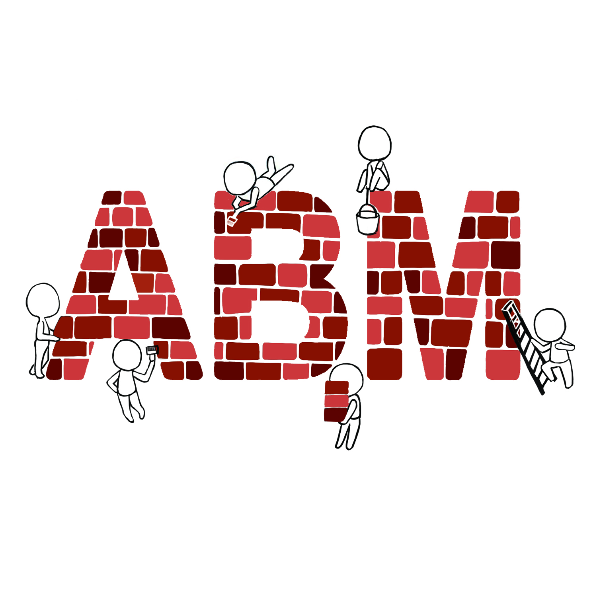

Melodie 
Installation
User Installation
Developer Installation
Dependency Note
Introduction
Agent-based Model (ABM)
Melodie Framework
Model
Scenario
Modelling Manager
Infrastructure
Tutorial
Project Structure
Agent
Scenario
Generate
agent_params
Load
simulator_scenarios
Model
Environment
DataCollector
Last Words
Model Gallery
CovidGridContagion
Project Structure
Grid and Spot
Matrix Data
Model
GridAgent
CovidNetworkContagion
Project Structure
Model
Scenario
CovidContagionCalibrator
Project Structure
Calibrator
Algorithm
Results
CovidContagionVisual
Visualizer
MelodieStudio
How to start?
Advanced Topics
TroubleShooting
Port Already in use
Windows
MacOS, Linux or other *nix systems
Melodie Errors
API Reference
Model
Agent
AgentList
Environment
DataCollector
Grid
Network
DataInfo
DataLoader
Scenario
Simulator
Calibrator
Trainer
DB
Melodie Exceptions
Change Log
Major Version 0.x
v0.5.0 (Dec. 17, 2022)
v0.4.2 (Dec. 15, 2022)
v0.4.1 (Dec. 12, 2022)
v0.4.0 (Nov. 15, 2022)
v0.3.0 (Oct. 28, 2022)
v0.2.0 (Oct. 24, 2022)
v0.1.1 (Aug. 23, 2022)
v0.1.0 (Jul. 22, 2022)
Start (May. 10, 2021)
Contribution
Report Bugs
Report Melodie Bugs
Report Documentation Bugs
Ask for Functionalities
How to Contribute
About
Melodie
»
API Reference
View page source
API Reference
Under development.
Content
Model
Agent
AgentList
Environment
DataCollector
Grid
Network
DataInfo
DataLoader
Scenario
Simulator
Calibrator
Trainer
DB
Melodie Exceptions